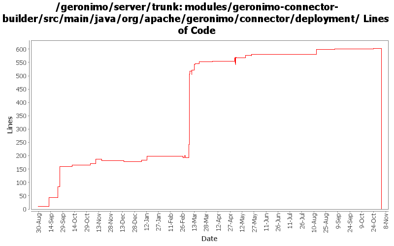

[root]/modules/geronimo-connector-builder/src/main/java/org/apache/geronimo/connector/deployment
 dconfigbean
(0 files, 0 lines)
dconfigbean
(0 files, 0 lines)
 jsr88
(0 files, 0 lines)
jsr88
(0 files, 0 lines)

| Author | Changes | Lines of Code | Lines per Change |
|---|---|---|---|
| Totals | 89 (100.0%) | 1082 (100.0%) | 12.1 |
| djencks | 45 (50.6%) | 907 (83.8%) | 20.1 |
| vamsic007 | 5 (5.6%) | 54 (5.0%) | 10.8 |
| dain | 5 (5.6%) | 39 (3.6%) | 7.8 |
| jlaskowski | 8 (9.0%) | 24 (2.2%) | 3.0 |
| akulshreshtha | 3 (3.4%) | 17 (1.6%) | 5.6 |
| dblevins | 3 (3.4%) | 15 (1.4%) | 5.0 |
| dwoods | 4 (4.5%) | 12 (1.1%) | 3.0 |
| kevan | 7 (7.9%) | 8 (0.7%) | 1.1 |
| rickmcguire | 2 (2.2%) | 5 (0.5%) | 2.5 |
| gawor | 1 (1.1%) | 1 (0.1%) | 1.0 |
| prasad | 6 (6.7%) | 0 (0.0%) | 0.0 |
GERONIMO-3565. Modules distributed amongst framework/modules and plugins
0 lines of code changed in 6 files:
support for TimerService injection (GERONIMO-3455)
1 lines of code changed in 1 file:
GERONIMO-3248 Extraneous WARN messages during deployment of resource-env-refs in EJB jar
o Thanks Manu for providing the patch
o Thanks Aman for confirming the fix
6 lines of code changed in 2 files:
GERONIMO-3254 Admin Console Wizard to auto generate geronimo-web.xml
and dependencies GERONIMO-3394, GERONIMO-3395, GERONIMO-3396, GERONIMO-3397, GERONIMO-3398
o First commit of "Create Plan" portlet code.
o Thanks to Shiva Kumar H R for this work.
26 lines of code changed in 1 file:
GERONIMO-906 Component references involved in transaction recovery are backwards. Unfortunately this change includes a lot of import optimizations, I hope they are not too confusing to review
1 lines of code changed in 1 file:
GERONIMO-3246 Cleanup exception handling so stack traces for first failures are not discarded.
5 lines of code changed in 2 files:
GERONIMO-3175 URLReference so url lookups return a new instance each time
8 lines of code changed in 1 file:
GERONIMO-3138 Whole lotta orbs going on
3 lines of code changed in 1 file:
GERONIMO-348 Change throw() to log.warn() due to EJB and other deployment failures.
2 lines of code changed in 2 files:
GERONIMO-348 Invalid module path or references in plan should result in failed deployment.
10 lines of code changed in 2 files:
GERONIMO-3134 GERONIMO-3136 Fix app client refs including ejb refs. Get a lot closer to jpa working on the app client
18 lines of code changed in 2 files:
Only process resource annotations for registered admin objects and user transaction
9 lines of code changed in 1 file:
GERONIMO-3138 ORB as resource-ref
28 lines of code changed in 1 file:
Add custom handling for resource-env-ref of type UserTransaction
3 lines of code changed in 1 file:
GERONIMO-3131 GERONIMO-3132 GERONIMO-3133 GERONIMO-3134 Defaults for persistence units. Supply locations of jars with persistent classes to the PersistenceUnitInfo. Match a ref with not persistence unit specified to a unique match. Allow wars to have jndi references pointing to the war module, not just the ear
5 lines of code changed in 2 files:
remove unused obsolete methods
0 lines of code changed in 1 file:
Only need to create a link for UserTransaction
10 lines of code changed in 1 file:
Only need to create a link for UserTransaction
1 lines of code changed in 1 file:
Don't try and process annotations pointing to derivations of EJBContext
4 lines of code changed in 1 file:
GERONIMO-3022 A whole lot more annotation processing tests from Tim McConnell together with persistence context ref parameter handling and @Resource meaning service-ref
11 lines of code changed in 2 files:
GERONIMO-2982 Prepend / to path url patterns in servlet mappings if missing. Also some much bigger changes to improve info in exception messages and some genericization
42 lines of code changed in 2 files:
Fix potential NPE in ConnectorModuleBuilder. Need to guard against potentially non-existent elements...
8 lines of code changed in 1 file:
Add support for MDB deployment
25 lines of code changed in 1 file:
GERONIMO-2837 Even if a resource-ref etc is already there, we need to check whether to add injection targets to it
20 lines of code changed in 2 files:
GERONIMO-2837 Minor bug fix to ResourceRefBuilder, it now works for the listed cf types. Still needs to be converted to just look for a target
2 lines of code changed in 1 file:
GERONIMO-2837 Make the AdminObjectRefBuilder identify what to turn an annotation into better
125 lines of code changed in 1 file:
GERONIMO-2934 AdminObjectRefBuilder should only work with annotations it can positively identify
3 lines of code changed in 1 file:
GERONMO-2887 More work to on injections and lifecycle methods
11 lines of code changed in 1 file:
GERONIMO-2934 Further refactoring of resource annotation builders. Removes duplicate processing
306 lines of code changed in 2 files:
GERONIMO-2934 Create ClassFinder in module builders. This almost certainly has bugs
50 lines of code changed in 2 files:
GERONIMO-2893 Progress towards better annotation support
5 lines of code changed in 1 file:
GERONIMO-2827 some ee5 app client support: no dd required and some injection support. Also better support for no dd in ears, and help ejb module builder not object if its given a non-ejb module. Also refactor some naming builder stuff
45 lines of code changed in 1 file:
GERONIMO-2887 Start hooking up injection for jetty
15 lines of code changed in 2 files:
GERONIMO-2723 - added site and tests to web-2.5-builder
- Dependency pruning in naming-builder
- Fixed cut-paste error
1 lines of code changed in 1 file:
GERONIMO-2723 Upgrade naming-builder and hence j2ee-builder to use javaee 5 schemas
16 lines of code changed in 2 files:
GERONIMO-2686 Implement registration for ModuleConfigurers. Requires openejb changes also which will take a while to locate and commit
4 lines of code changed in 1 file:
GERONIMO-2657 intermediate checkin, new method in AbstractNamingBuilder and deal with spec refs in PersistenceUnitRefBuilder
12 lines of code changed in 2 files:
GERONIMO-2537 Update the src headers in server/trunk/modules to be compliant with the new ASF src header and copyright policy (http://www.apache.org/legal/src-headers.html). I also did some cleanup of the src headers and tried to make them all a consistent format
0 lines of code changed in 6 files:
GERONIMO-2484 NamespaceDrivenBuilders should register QNameSets
3 lines of code changed in 2 files:
GERONIMO-1986 TranQL Connector doesn't check Driver Class during deployment: modifying rev 472998. If class loading fails, log a warning instead of throwing a deployment exception.
9 lines of code changed in 1 file:
(9 more)